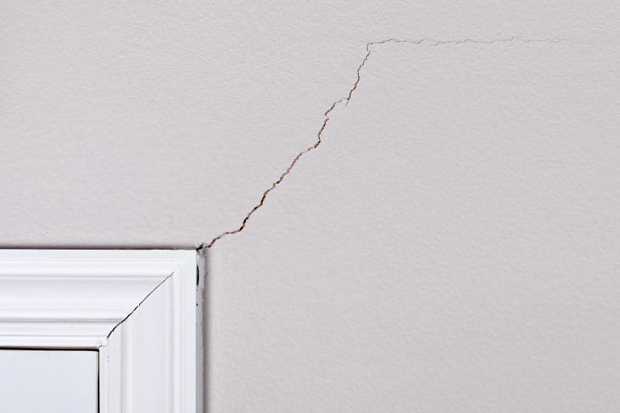
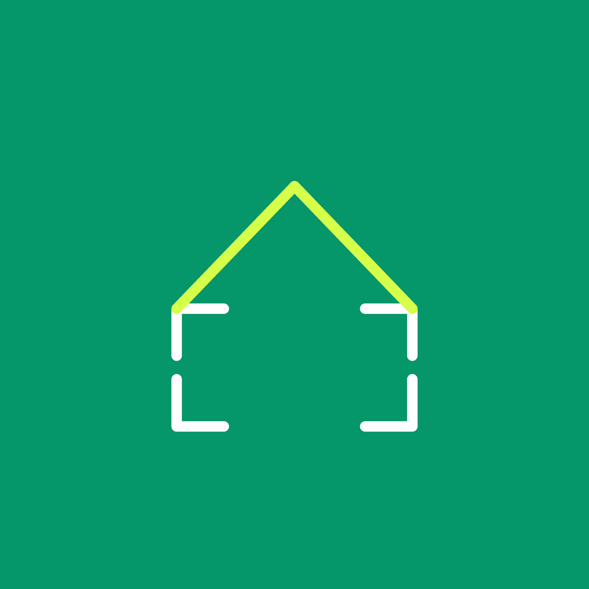
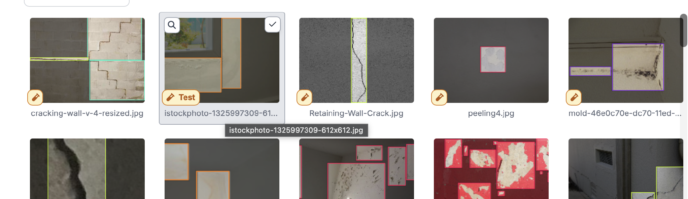
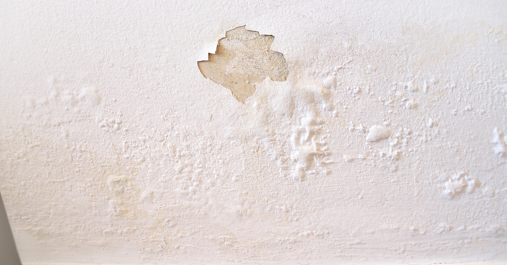
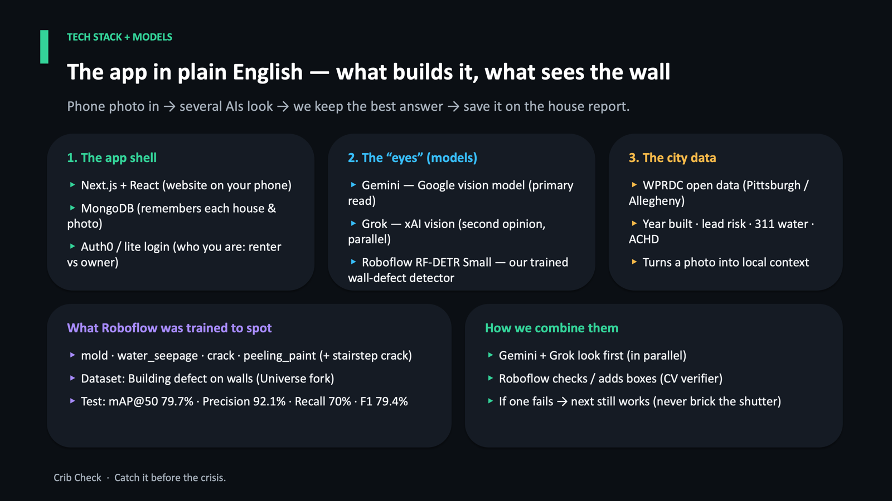

01 / Hook
Catch housing damage early.
A small stain is cheap. An ignored leak is a crisis. CribCheck exists to pull evidence forward in time.
HackCMU 2026 / team gotplacestobe
Renters see the stain first. Landlords need a record they can trust. CribCheck guides a phone camera across high-risk surfaces, labels what it sees, and turns that into a shareable property report — evidence, not a medical or legal diagnosis.



Browse the pitch
This is the same story we used at the table. Click through it, then jump to the source or the pitch deck.
01 / Hook
A small stain is cheap. An ignored leak is a crisis. CribCheck exists to pull evidence forward in time.
02 / Problem
Renters see it first. Requests get ignored. Costs compound once the damage is undeniable.
03 / Stakes
60% had more than one issue in two years. Only 18% were very confident their landlord would act. Typical remediation sits around $2.3–2.4K.
04 / Cost of waiting
Mold inspection averages about $671. Left long enough, jobs run $10–30K. Dampness is common, and it is linked to respiratory harm.

05 / Answer
Guided capture, plain-English labels with on-photo boxes, ghost overlay for progression, and a structured report.
06 / Flow
Sign in as tenant or owner, pick a property, capture with Gemini + Roboflow, review, then share and act.

07 / Differentiators
nextBestSurface() spends limited patience where risk is highest. Unreviewed findings are not claims. Progression is lined up, not argued.
08 / Model
79.7% mAP@50. 92.1% precision. 70% recall. High precision means fewer false alarms to landlords. Gemini still helps on ambiguous mold.
09 / Boundaries
We surface visible indicators and measure change. We do not diagnose species, invent a mold threshold, or see moisture behind walls.
10 / Who wins
Renters get proof. Landlords get cheaper alerts. The wedge is an early-evidence layer on a $15B health and housing problem.
11 / Demo
Open as a tenant. Follow the surface prompt. Shoot a defect. Show the finding badge. Optionally overlay the ghost, then open the report.
12 / Close
Evidence landlords can act on. Try the guided walkthrough, or tell us where the detector is wrong.
The problem
Stains, leaks, and mold show up in lived-in rooms long before they show up in a work order that anyone trusts. Without a shared, time-stamped record, maintenance gets delayed, disputed, or dismissed. By the time the damage is obvious, remediation and deposit fights cost far more than an early fix.
The product
CribCheck is a mobile web app. A renter or inspector signs in, picks a property, and is prompted toward the next best surface. Gemini and a trained Roboflow RF-DETR model look at the frame. Human review keeps unconfirmed items off the claim. A ghost overlay lines new photos up with old ones so “worse versus better” is visible.
Tenant or owner / inspector.
The app points the lens.
Gemini + RF-DETR verify.
Unreviewed is not a claim.
A report landlords can act on.
The model
Roboflow RF-DETR Small was trained to spot mold, seepage, cracks, and peeling paint. On the held-out test set it reached 79.7% mAP@50 and 92.1% precision. Recall is 70% — which is why Gemini still sits in the loop on ambiguous mold rather than pretending computer vision is finished.
Boundaries
Surface visible indicators, triage what warrants a look, and measure change on the same surface over time.
Diagnose health, identify mold species, or claim to see moisture behind walls.
WHO declined a single mold threshold. Professional meters still confirm. CribCheck is early evidence, not a lab.
Open the work
Read the repo or download the pitch we presented.